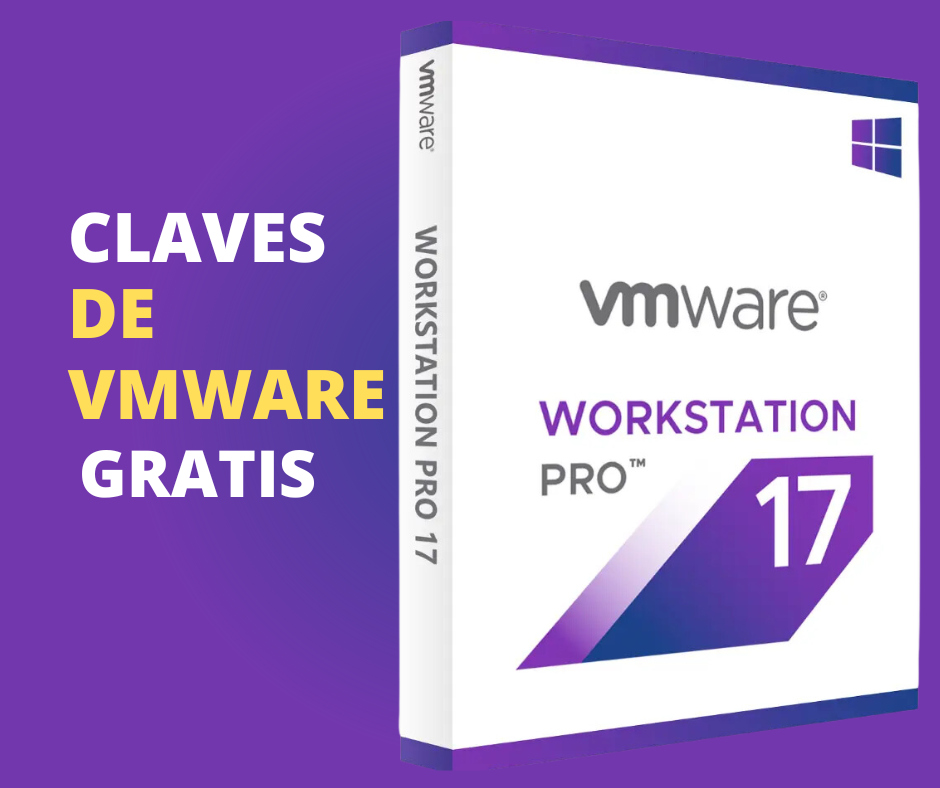

Apuntes sobre Analista de Ciberseguridad
Amenazas
La seguridad es un aspecto fundamental en cualquier empresa y existen diversas amenazas que pueden comprometerla. Una de las amenazas más comunes es el factor humano. Tanto interno como externo, los atacantes externos como hackers, crackers, virus y troyanos pueden causar daños a la empresa a través de eventos maliciosos.
Los empleados antiguos o nuevos también pueden representar una amenaza para la empresa. Otra amenaza en la seguridad son los factores naturales, como huracanes, tsunamis, lluvias y tornados, entre otros. Es importante que las empresas identifiquen, analicen y clasifiquen las vulnerabilidades en su entorno específico y establezcan planes de contingencia para actuar en caso de emergencia.
Curiosidades
La ciberseguridad no es una profesión solitaria. Se necesita interactuar con colegas, confiar en otros investigadores o profesionales y compartir información con la comunidad.
La triada de la CIA es un concepto de seguridad que consta de tres elementos clave: confidencialidad, integridad y disponibilidad. La confidencialidad se refiere a que la información y los recursos solo deben ser accedidos por personas autorizadas, y se utilizan técnicas como la encriptación o la verificación para asegurarlo. La integridad se refiere a que la información debe ser precisa y consistente a lo largo de su vida útil, y se debe garantizar que no se realicen cambios no autorizados en los datos. Finalmente, la disponibilidad se refiere a que se deben realizar tareas de mantenimiento y actualización físicas y lógicas para garantizar que las operaciones de TI funcionen sin interrupciones, las 24 horas del día, los 7 días de la semana, y que se deben tener planes de contingencia en caso de desastres para asegurar la continuidad de los servicios.
Seguridad de la red y vulnerabilidades de la base de datos
No existe una regla fija que indique cuántas veces se debe realizar una prueba de vulnerabilidad en una base de datos. La cantidad de pruebas de vulnerabilidad que se deben realizar depende de varios factores, como el tamaño y la complejidad de la base de datos, la frecuencia de los cambios en la configuración y el nivel de seguridad requerido.
Es importante tener en cuenta que las pruebas de vulnerabilidad sólo garantizan la detección de vulnerabilidades conocidas. Es posible que existan vulnerabilidades desconocidas que no se detecten durante las pruebas, por lo que es recomendable implementar medidas de seguridad adicionales, como la monitorización continua y la implementación de parches de seguridad. Además, se recomienda realizar pruebas de vulnerabilidad de manera periódica para garantizar la seguridad de la base de datos y reducir el riesgo de posibles brechas de seguridad.
Las inyecciones SQL y las inyecciones de SO son las mas peligrosas porque pueden comprometer la seguridad de los sistemas informáticos. Los ataques de inyección SQL les permiten a los atacantes falsificar identidades, alterar datos existentes, exponer datos del sistema, eliminar datos o quitar su disponibilidad y convertirse en administradores del servidor de la base de datos. Estos ataques se basan en vulnerabilidades existentes y permiten a un posible intruso inyectar código malicioso para llevar a cabo sus ataques y comprometer la seguridad y privacidad de los usuarios
Se recomienda no ejecutar una aplicación con privilegios de superusuario o administrador a menos que sea necesario, ya que esto podría permitir el abuso de estos privilegios y aumentar el riesgo de inyección de sistema operativo. Esto ayuda a mejorar la seguridad en muchos aspectos, no solo en la prevención de inyecciones.
strong> Para evitar inyecciones, se recomienda no ejecutar comandos a través del intérprete de comandos de Shell o CMD. En su lugar, se deben utilizar librerías dentro de la aplicación y funciones más seguras al ejecutar comandos en el sistema. Es mejor usar parámetros y funciones en lugar de rutas explícitas al llamar a archivos o aplicaciones en el código. Además, todas las entradas del usuario deben ser validadas.
Es recomendable especificar los archivos mediante identificadores únicos (IDs) en lugar de rutas de acceso directo. Esto evita que los usuarios tengan acceso directo a la ruta del archivo y dificulta el acceso no autorizado a los archivos del sistema.
Se recomienda evitar el uso de comandos de sistema operativo y en su lugar utilizar bibliotecas de terceros integradas y seguras. Es importante ejecutar el código con el menor privilegio posible y utilizar funciones de biblioteca seguras al ejecutar comandos en el sistema operativo. En lugar de utilizar rutas explícitas al ejecutar aplicaciones, se deben utilizar bibliotecas compatibles.
En SQL se recomienda utilizar procedimientos almacenados y ocultar al usuario las respuestas nativas de la base de datos. Existen ataques cibernéticos que aprovechan los errores de la base de datos mostrados en la aplicación para llevar a cabo sus acciones malintencionadas.Pruebas de penetración, respuesta a incidentes y análisis forense
Antes de definir una respuesta ante incidentes de seguridad, es importante conocer las amenazas a las que nos enfrentamos día a día. es importante conocer las amenazas a las que nos enfrentamos día a día.
Algunas de las amenazas de seguridad más comunes incluyen ataques de software, exfiltración de datos, sabotaje de información y robo de equipos.
Es importante que la información sobre ciberseguridad sea clara y fácilmente comprensible para cualquier persona.
En el proceso de recolección de evidencia en la forensia digital, es importante documentar todo desde el inicio, incluyendo cómo se encuentra y cómo se maneja la evidencia.
Historia del primer virus informático
El primer virus informático conocido fue creado en 1971 por un programador llamado Robert Thomas, quien trabajaba para la empresa BBN Technologies en Cambridge, Massachusetts. Este virus fue creado como una especie de "broma" y se le llamó "Creeper".
"Creeper" era un programa que se propagaba a través de la red ARPANET, que era una precursora de Internet utilizada por el Departamento de Defensa de los Estados Unidos. El virus infectaba los sistemas DEC PDP-10 ejecutando el sistema operativo TENEX, que era comúnmente utilizado en esa época.
El virus "Creeper" se movía de un sistema a otro, mostrando un mensaje que decía "I'm the creeper, catch me if you can!" (Soy el trepador, atrápame si puedes). Este mensaje también hacía referencia a un programa anti-virus llamado "Reaper" que fue creado poco después para eliminar el virus "Creeper".
Aunque "Creeper" no causó ningún daño significativo, sentó las bases para el desarrollo de programas maliciosos que se han vuelto cada vez más sofisticados y peligrosos con el tiempo.
Es importante destacar que el término "virus informático" no fue acuñado hasta la década de 1980, y que antes de eso se utilizaban otros términos para referirse a programas maliciosos, como "gusanos" o "caballos de Troya". Además, el término "virus" se utiliza a menudo de forma incorrecta para referirse a otros tipos de malware, como troyanos o spyware.
Publicaciones recientes

Claves de VMWare 17 Pro
Solo para uso educativo, se recomienda siempre comprar la Licencia Original
Leer mas
Claves de VMWare 17 Pro
Solo para uso educativo, se recomienda siempre comprar la Licencia Original
Leer mas
Ciberseguridad-en-la-Era-Digital
El panorama de las amenazas cibernéticas ha evolucionado significativamente a lo largo de los años. Desde los primeros virus informáticos hasta las complejas amenazas de hoy en día, los atacantes han perfeccionado sus tácticas y técnicas. En este capítulo, analizaremos la historia de las amenazas cibernéticas y cómo han evolucionado para convertirse en un desafío cada vez más sofisticado.
Botón
Claves Genericas de Windows 10
Activar Windows 10 en cualquier version con licencias genericas de Microsoft
Botón